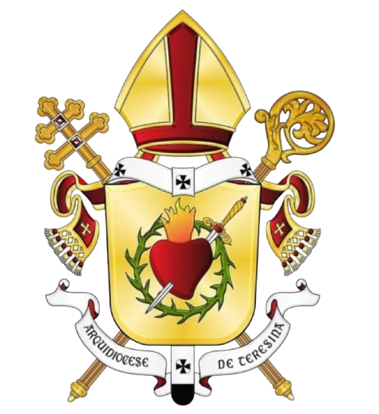
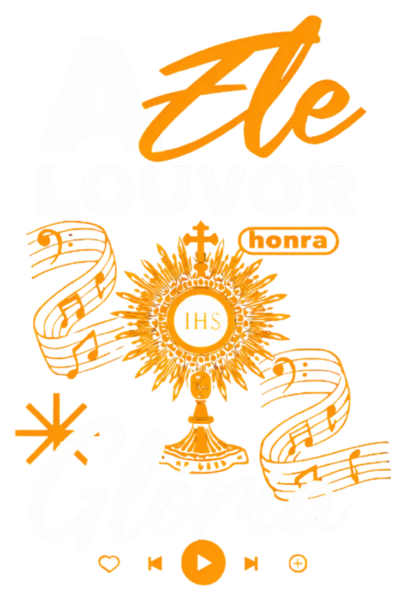
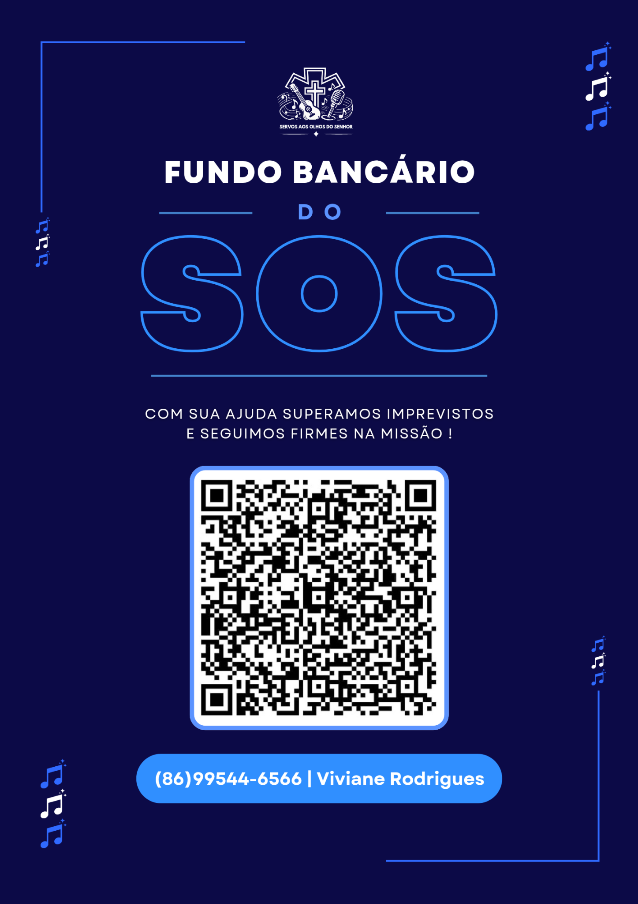

Arquidiocese de Teresina
Paróquia NS Conceição AparecidaMais que
músicos,
servos.
Evangelizando através da música, formando servos para a liturgia e colocando nossos dons a serviço de Deus.
♫♪♬✦
Role para descobrir
Comece por aquiSeu próximo passo
Seu próximo passo
na missão.
Conteúdos diretos, visuais e organizados para quem está começando e para quem já serve na comunidade.
Cristo no centroMúsica que evangelizaServiço com alegriaFormação para todosCristo no centroMúsica que evangelizaServiço com alegriaFormação para todos
2021
Nossa história
Uma missão que nasceu na comunidade.
O S.O.S. nasceu na Comunidade Santa Luzia, da Paróquia Nossa Senhora da Conceição Aparecida. Desde o início, sua missão é evangelizar por meio da música e formar jovens e adultos para servir a Deus nas comunidades, paróquias e missões.
Ler nossa história
“Servi ao Senhor com alegria.”Salmo 100,2
Ajude a missão
Fundo Bancário do S.O.S.
Com sua ajuda, superamos imprevistos e seguimos firmes na missão. O QR Code e o contato estão disponíveis no cartão.
Abrir cartão completo ↗